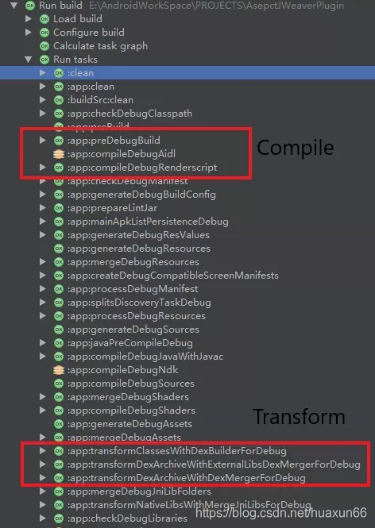

前言
之前已经学习过了AspectJ的插桩形式。AspectJ是Java中流行的AOP编程扩展框架，从底层实现上来看，AspectJ内部使用的是BCEL框架来完成，在使用上来看，AspectJ框架有自己的一定优势：成熟稳定、使用简单。但是相比于ASM，它的功能无法满足某些场景的需求，如果想针对所有函数都做插桩，AspectJ会带来不少的性能影响。
ASM
ASM 是一个 Java 字节码操控框架。它能被用来动态生成类或者增强既有类的功能。ASM 可以直接产生二进制 class 文件，也可以在类被加载入 Java 虚拟机之前动态改变类行为。Java class 被存储在严格格式定义的 .class 文件里，这些类文件拥有足够的元数据来解析类中的所有元素：类名称、方法、属性以及 Java 字节码（指令）。ASM 从类文件中读入信息后，能够改变类行为，分析类信息，甚至能够根据用户要求生成新类。
ASM的功能非常强大，它可以满足100%的场景，其主要特点有：
- 操作灵活，可以根据需求自定义修改、插入、删除。
- 上手难， 需要对Java字节码有比较深入的了解。
ASM更加高效直接，因而有时需要掌握一些必不可少的Java字节码知识以及Java虚拟机运行机制。
Android打包流程
自定义Gradle插件
详见 自定义Gradle插件
如何使用Transform API
因为是编译期间搞事情，所以首先要在编译期间找一个时间点，这也就是本节 Transform 的内容，找到“作案”地点后，接下来就是“作案对象”了，这里选择的是对编译后的 .class 字节码下手，要用到的工具就是后面要介绍的 ASM 了。
上面是官方出品的编译打包签名流程，我们要搞事情的位置就是 Java Compiler 编译成 .class Files 之到打包为 .dex Files 这之间。Google 官方在 Android Gradle 的 1.5.0 版本以后提供了 Transfrom API, 允许第三方自定义插件在打包 dex 文件之前的编译过程中操作 .class 文件，所以这里先要做的就是实现一个自定义的 Transform 进行.class文件遍历拿到所有方法，修改完成对原文件进行替换。
下面说一下如何引入 Transform 依赖，在 Android gradle 插件 1.5 版本以前，是有一个单独的 transform api 的；从 2.0 版本开始，就直接并入到 gradle api 中了。
Gradle 1.5:
Compile ‘com.android.tools.build:transfrom-api:1.5.0’
Gradle 2.0 开始:
implementation 'com.android.tools.build:gradle:3.5.2'
Transform是作用在.class编译后，打包成.dex前，可以对.class和resource进行再处理的部分。为了验证，我们建立一个项目Build的一次。

可以很清楚的看到，原生就带了一系列Transform供使用。那么这些Transform是怎么组织在一起的呢，我们用一张图表示：

每个Transform其实都是一个gradle task，Android编译器中的TaskManager将每个Transform串连起来，第一个Transform接收来自javac编译的结果，以及已经拉取到在本地的第三方依赖（jar. aar），还有resource资源，注意，这里的resource并非android项目中的res资源，而是asset目录下的资源。 这些编译的中间产物，在Transform组成的链条上流动，每个Transform节点可以对class进行处理再传递给下一个Transform。我们常见的混淆，Desugar等逻辑，它们的实现如今都是封装在一个个Transform中，而我们自定义的Transform，会插入到这个Transform链条的最前面。
但其实，上面这幅图，只是展示Transform的其中一种情况。而Transform其实可以有两种输入，一种是消费型的，当前Transform需要将消费型型输出给下一个Transform，另一种是引用型的，当前Transform可以读取这些输入，而不需要输出给下一个Transform，比如Instant Run就是通过这种方式，检查两次编译之间的diff的。
Transform解读
class TraceTransform extends Transform {
@Override
String getName() {
return "TraceLog" }
@Override
Set<QualifiedContent.ContentType> getInputTypes() {
return TransformManager.CONTENT_CLASS }
@Override
Set<? super QualifiedContent.Scope> getScopes() {
return TransformManager.SCOPE_FULL_PROJECT }
@Override
boolean isIncremental() {
return true
}
@Override
void transform(TransformInvocation transformInvocation) throws TransformException, InterruptedException, IOException {
super.transform(transformInvocation)
......
}
}
我们一项项分析：
1.getName
@Override
String getName() {
return "TraceLog"
}
Name顾名思义，就是我们的Transform名称，再回到我们刚刚Build的流程里：

这个最终的名字是如何构成的呢？好像跟我们这边的定义的名字有区别。以transform开头，之后拼接ContentType，这个ContentType代表着这个Transform的输入文件的类型，类型主要有两种，一种是Classes，另一种是Resources，ContentType之间使用And连接，拼接完成后加上With，之后紧跟的就是这个Transform的Name，name在getName()方法中重写返回即可。
2.getInputTypes
@Override
Set<QualifiedContent.ContentType> getInputTypes() {
return TransformManager.CONTENT_CLASS
}
先来看代码注释，注释写的很清晰了，必须是CLASSES(0x01),RESOURCES(0x02)之一，相当于Transform需要处理的类型。
/**
* Returns the type(s) of data that is consumed by the Transform. This may be more than
* one type.
*
* <strong>This must be of type {@link QualifiedContent.DefaultContentType}</strong>
*/
@NonNull
public abstract Set<ContentType> getInputTypes();
----------------------------------
/**
* The type of of the content.
*/
enum DefaultContentType implements ContentType {
/**
* The content is compiled Java code. This can be in a Jar file or in a folder. If
* in a folder, it is expected to in sub-folders matching package names.
*/
CLASSES(0x01),
/** The content is standard Java resources. */
RESOURCES(0x02);
private final int value;
DefaultContentType(int value) {
this.value = value;
}
@Override
public int getValue() {
return value;
}
}
3.getScopes
@Override
Set<? super QualifiedContent.Scope> getScopes() {
return TransformManager.SCOPE_FULL_PROJECT
}
先来看源码注释，这个的作用相当于用来Transform表明作用域
/**
* Returns the scope(s) of the Transform. This indicates which scopes the transform consumes.
*/
@NonNull
public abstract Set<Scope> getScopes();
开发一共可以选如下几种：
/**
* The scope of the content.
*
* <p>
* This indicates what the content represents, so that Transforms can apply to only part(s)
* of the classes or resources that the build manipulates.
*/
enum Scope implements ScopeType {
/** Only the project (module) content */
PROJECT(0x01),
/** Only the sub-projects (other modules) */
SUB_PROJECTS(0x04),
/** Only the external libraries */
EXTERNAL_LIBRARIES(0x10),
/** Code that is being tested by the current variant, including dependencies */
TESTED_CODE(0x20),
/** Local or remote dependencies that are provided-only */
PROVIDED_ONLY(0x40),
/**
* Only the project's local dependencies (local jars)
*
* @deprecated local dependencies are now processed as {@link #EXTERNAL_LIBRARIES}
*/
@Deprecated PROJECT_LOCAL_DEPS(0x02),
/**
* Only the sub-projects's local dependencies (local jars).
*
* @deprecated local dependencies are now processed as {@link #EXTERNAL_LIBRARIES}
*/
@Deprecated SUB_PROJECTS_LOCAL_DEPS(0x08);
一般来说如果是要处理所有class字节码，Scope我们一般使用TransformManager.SCOPE_FULL_PROJECT。即
public static final Set<Scope> SCOPE_FULL_PROJECT = Sets.immutableEnumSet(Scope.PROJECT, Scope.SUB_PROJECTS, Scope.EXTERNAL_LIBRARIES);
4.isIncremental
@Override
boolean isIncremental() {
return true
}
增量编译开关。当我们开启增量编译的时候，相当input包含了changed/removed/added三种状态，实际上还有notchanged。需要做的操作如下：
- NOTCHANGED: 当前文件不需处理，甚至复制操作都不用；
- ADDED、CHANGED: 正常处理，输出给下一个任务；
- REMOVED: 移除outputProvider获取路径对应的文件。
5.transform
@Override
void transform(TransformInvocation transformInvocation) throws TransformException, InterruptedException, IOException {
super.transform(transformInvocation)
......
}
先来看一下源码注释，它是Transform处理文件的核心代码：
/**
* Executes the Transform.
*
* <p>The inputs are packaged as an instance of {@link TransformInvocation}
* <ul>
* <li>The <var>inputs</var> collection of {@link TransformInput}. These are the inputs
* that are consumed by this Transform. A transformed version of these inputs must
* be written into the output. What is received is controlled through
* {@link #getInputTypes()}, and {@link #getScopes()}.</li>
* <li>The <var>referencedInputs</var> collection of {@link TransformInput}. This is
* for reference only and should be not be transformed. What is received is controlled
* through {@link #getReferencedScopes()}.</li>
* </ul>
*
* A transform that does not want to consume anything but instead just wants to see the content
* of some inputs should return an empty set in {@link #getScopes()}, and what it wants to
* see in {@link #getReferencedScopes()}.
*
* <p>Even though a transform's {@link Transform#isIncremental()} returns true, this method may
* be receive <code>false</code> in <var>isIncremental</var>. This can be due to
* <ul>
* <li>a change in secondary files ({@link #getSecondaryFiles()},
* {@link #getSecondaryFileOutputs()}, {@link #getSecondaryDirectoryOutputs()})</li>
* <li>a change to a non file input ({@link #getParameterInputs()})</li>
* <li>an unexpected change to the output files/directories. This should not happen unless
* tasks are improperly configured and clobber each other's output.</li>
* <li>a file deletion that the transform mechanism could not match to a previous input.
* This should not happen in most case, except in some cases where dependencies have
* changed.</li>
* </ul>
* In such an event, when <var>isIncremental</var> is false, the inputs will not have any
* incremental change information:
* <ul>
* <li>{@link JarInput#getStatus()} will return {@link Status#NOTCHANGED} even though
* the file may be added/changed.</li>
* <li>{@link DirectoryInput#getChangedFiles()} will return an empty map even though
* some files may be added/changed.</li>
* </ul>
*
* @param transformInvocation the invocation object containing the transform inputs.
* @throws IOException if an IO error occurs.
* @throws InterruptedException
* @throws TransformException Generic exception encapsulating the cause.
*/
public void transform(@NonNull TransformInvocation transformInvocation)
throws TransformException, InterruptedException, IOException {
// Just delegate to old method, for code that uses the old API.
//noinspection deprecation
transform(transformInvocation.getContext(), transformInvocation.getInputs(),
transformInvocation.getReferencedInputs(),
transformInvocation.getOutputProvider(),
transformInvocation.isIncremental());
}
大致意思如下，具体大家一定要仔细看注释：
- 如果拿取了getInputs()的输入进行消费，则transform后必须再输出给下一级
- 如果拿取了getReferencedInputs()的输入，则不应该被transform。
- 是否增量编译要以transformInvocation.isIncremental()为准。
在 transform 方法中主要做的事情就是把 Inputs 保存到 outProvider 提供的位置去。生成的位置见下图：

后面会讲到代码，主要有两个 transform 方法，一个 transformJar 就是简单的拷贝，另一个 transformDirectory，我们就是在这里用 ASM 对字节码进行修改的。
Transform注册和使用
在gradle插件中注册
class TracePlugin implements Plugin<Project>{
@Override
void apply(Project project) {
println "------trace plugin begin-------"
def android = project.extensions.findByType(AppExtension.class)
android.registerTransform(new TraceTransform(project))
println "------trace plugin end-------"
}
}
ASM库结构
ASM 库是一款基于 Java 字节码层面的代码分析和修改工具。ASM 可以直接生产二进制的 class 文件，也可以在类被加载入 JVM 之前动态修改类行为。
ASM 库的结构如下所示：
- Core：为其他包提供基础的读、写、转化Java字节码和定义的API，并且可以生成Java字节码和实现大部分字节码的转换，在 访问者模式和ASM 中介绍的几个重要的类就在 Core API 中：ClassReader、ClassVisitor 和 ClassWriter 类.
- Tree：提供了 Java 字节码在内存中的表现
- Commons：提供了一些常用的简化字节码生成、转换的类和适配器
- Util：包含一些帮助类和简单的字节码修改类，有利于在开发或者测试中使用
- XML：提供一个适配器将XML和SAX-comliant转化成字节码结构，可以允许使用XSLT去定义字节码转化
Core API 介绍
- ClassReader类，负责读取.class文件里的内容，然后拆分成各个不同的部分。
- ClassVisitor类，负责对.class文件中某一部分里的信息进行修改。
- ClassWriter类，负责将各个不同的部分重新组合成一个完整的.class文件。

(1)ClassVisitor 抽象类
如下所示，在 ClassVisitor 中提供了和类结构同名的一些方法，这些方法会对类中相应的部分进行操作，而且是有顺序的：
visit
[ visitSource ]
[ visitOuterClass ]
( visitAnnotation | visitAttribute )*
( visitInnerClass | visitField | visitMethod )*
visitEnd
visit方法最先被调用，接着调用零次或一次visitSource方法，调用零次或一次visitOuterClass方法，接下来按任意顺序调用任意多次visitAnnotation和visitAttribute方法，再按任意顺序调用任意多次visitInnerClass、visitField、visitMethod方法，最后调用visitEnd。
public abstract class ClassVisitor {
......
public void visit(int version, int access, String name, String signature, String superName, String[] interfaces);
public void visitSource(String source, String debug);
public void visitOuterClass(String owner, String name, String desc);
public AnnotationVisitor visitAnnotation(String desc, boolean visible);
public AnnotationVisitor visitTypeAnnotation(int typeRef, TypePath typePath, String desc, boolean visible);
public void visitAttribute(Attribute attr);
public void visitInnerClass(String name, String outerName, String innerName, int access);
public FieldVisitor visitField(int access, String name, String desc, String signature, Object value);
public MethodVisitor visitMethod(int access, String name, String desc, String signature, String[] exceptions);
public void visitEnd();
}
void visit(int version, int access, String name, String signature, String superName, String[] interfaces)该方法是当扫描类时第一个调用的方法，主要用于类声明使用。下面是对方法中各个参数的示意：visit( 类版本 , 修饰符 , 类名 ,泛型信息 , 继承的父类 , 实现的接口)AnnotationVisitor visitAnnotation(String desc, boolean visible)该方法是当扫描器扫描到类注解声明时进行调用。下面是对方法中各个参数的示意：visitAnnotation(注解类型 , 注解是否可以在JVM 中可见)。FieldVisitor visitField(int access, String name, String desc, String signature, Object value)该方法是当扫描器扫描到类中字段时进行调用。下面是对方法中各个参数的示意：visitField(修饰符 , 字段名 , 字段类型 , 泛型描述 , 默认值)MethodVisitor visitMethod(int access, String name, String desc, String signature, String[] exceptions)该方法是当扫描器扫描到类的方法时进行调用。下面是对方法中各个参数的示意：visitMethod(修饰符 , 方法名 , 方法签名 ,泛型信息 , 抛出的异常)void visitEnd()该方法是当扫描器完成类扫描时才会调用，如果想在类中追加某些方法
(2)ClassReader类
这个类会将 .class 文件读入到 ClassReader 中的字节数组中，它的 accept 方法接受一个 ClassVisitor 实现类，并按照顺序调用 ClassVisitor 中的方法。
值得注意的是，ClassReader类accept方法的第二个参数flags是一个位掩码（bit-mask），可以选择组合的值有下面这些。
- SKIP_DEBUG：跳过类文件中的调试信息，比如行号信息（LineNumberTable）等。
- SKIP_CODE：跳过方法体中的Code属性（方法字节码、异常表等）。
- EXPAND_FRAMES：展开StackMapTable属性。
- SKIP_FRAMES：跳过StackMapTable属性。
(3)ClassWriter 类
ClassWriter 是一个 ClassVisitor 的子类，是和 ClassReader 对应的类，ClassReader 是将 .class 文件读入到一个字节数组中，ClassWriter 是将修改后的类的字节码内容以字节数组的形式输出。在ClassVisitor的visit方法中可以对原始的字节码做修改，ClassWriter的toByteArray方法则把最终修改的字节码以byte数组的形式返回。
(4)MethodVisitor & AdviceAdapter
MethodVisitor 是一个抽象类，当 ASM 的 ClassReader 读取到 Method 时就转入 MethodVisitor 接口处理。
AdviceAdapter 是 MethodVisitor 的子类，使用 AdviceAdapter 可以更方便的修改方法的字节码。其中比较重要的几个方法如下：
void visitCode()：表示 ASM 开始扫描这个方法void onMethodEnter()：进入这个方法void onMethodExit()：即将从这个方法出去void onVisitEnd()：表示方法扫码完毕
用于生成和变转已编译方法的都是基于 MethodVisitor 抽象类的，它由 ClassVisitor.visitMethod() 方法返回。
(5)FieldVisitor 抽象类
FieldVisitor 是一个抽象类，当 ASM 的 ClassReader 读取到 Field 时就转入 FieldVisitor 接口处理。和分析 MethodVisitor 的方法一样，也可以查看源码注释进行学习，这里不再详细介绍。
操作流程
- 需要创建一个 ClassReader 对象，将 .class 文件的内容读入到一个字节数组中
- 然后需要一个 ClassWriter 的对象将操作之后的字节码的字节数组回写
- 需要事件过滤器 ClassVisitor。在调用 ClassVisitor 的某些方法时会产生一个新的 XXXVisitor对象，当我们需要修改对应的内容时只要实现自己的 XXXVisitor 并返回就可以了
input.directoryInputs.each { DirectoryInput directoryInput ->
if (directoryInput.file.isDirectory()) {
directoryInput.file.eachFileRecurse { File file ->
def name = file.name
if (name.endsWith(".class") && !(name == ("R.class")) && !name.startsWith("R\$") && !(name == ("BuildConfig.class"))) {
ClassReader reader = new ClassReader(file.bytes)
ClassWriter writer = new ClassWriter(reader, ClassWriter.COMPUTE_MAXS)
ClassVisitor visitor = new TraceVisitor(writer)
reader.accept(visitor, ClassReader.EXPAND_FRAMES)
byte[] code = writer.toByteArray()
def classPath = file.parentFile.absolutePath + File.separator + name
FileOutputStream fos = new FileOutputStream(classPath)
fos.write(code)
fos.close()
}
}
}
虽然有了ASM这种框架，可以很方便的修改class文件，但是如果不熟悉框架的使用，写起来还是有点吃力
人类总是懒惰的，试图找出一些捷径，于是有了一款Idea插件——ASM Bytecode Outline
实践操作
新增一个字段
以以下代码为例，使用javac编译为class文件
public class MyMain {
}
这里采用visitEnd方法中进行添加字段的操作，使用下面的代码可以给MyMain新增一个String类型的xyz字段
val bytes: ByteArray = FileUtils.readFileToByteArray(File("./MyMain.class"))
val cr: ClassReader = ClassReader(bytes)
val cw: ClassWriter = ClassWriter(0)
val cv: ClassVisitor = object : ClassVisitor(ASM9, cw) {
override fun visitEnd() {
super.visitEnd()
val fv: FieldVisitor = cv.visitField(Opcodes.ACC_PUBLIC, "xyz", "Ljava/lang/String;", null, null)
if (fv != null) fv.visitEnd()
}
}
cr.accept(cv, ClassReader.SKIP_CODE or ClassReader.SKIP_DEBUG)
val bytesModified: ByteArray = cw.toByteArray()
FileUtils.writeByteArrayToFile(File("./MyMain2.class"), bytesModified)
使用javap查看MyMain2的字节码，可以看到已经多了一个类型为String的xyz变量。
新增方法
同样以MyMain类为例，给这个类新增一个xyz方法。
val bytes: ByteArray = FileUtils.readFileToByteArray(File("./MyMain.class"))
val cr: ClassReader = ClassReader(bytes)
val cw: ClassWriter = ClassWriter(0)
val cv: ClassVisitor = object : ClassVisitor(ASM9, cw) {
override fun visitEnd() {
super.visitEnd()
val mv: MethodVisitor = cv.visitMethod(Opcodes.ACC_PUBLIC, "xyz", "(ILjava/lang/String;)V", null, null)
if (mv != null) mv.visitEnd()
}
}
cr.accept(cv, ClassReader.SKIP_CODE or ClassReader.SKIP_DEBUG)
val bytesModified: ByteArray = cw.toByteArray()
FileUtils.writeByteArrayToFile(File("./MyMain2.class"), bytesModified)
使用javap查看MyMain2的字节码，确认xyz方法已经生成。
移除方法和字段
以下面MyMain类为例，删掉abc字段和xyz方法
public class MyMain {
private int abc = 0;
private int def = 0;
public void foo() {}
public int xyz(int a, String b) {
return 0;
}
}
如果仔细观察ClassVisitor类的visit方法，会发现visitField、visitMethod等方法是有返回值的，如果这些方法直接返回null，这些字段、方法将从类中被移除，代码如下所示。
val bytes: ByteArray = FileUtils.readFileToByteArray(File("./MyMain.class"))
val cr: ClassReader = ClassReader(bytes)
val cw: ClassWriter = ClassWriter(0)
val cv: ClassVisitor = object : ClassVisitor(ASM9, cw) {
override fun visitField(access: Int, name: String?, descriptor: String?, signature: String?, value: Any?): FieldVisitor? {
if ("abc" == name) return null
return super.visitField(access, name, descriptor, signature, value)
}
override fun visitMethod(access: Int, name: String?, descriptor: String?, signature: String?, exceptions: Array<out String>?): MethodVisitor? {
if ("xyz" == name) return null
return super.visitMethod(access, name, descriptor, signature, exceptions)
}
}
cr.accept(cv, ClassReader.SKIP_CODE or ClassReader.SKIP_DEBUG)
val bytesModified: ByteArray = cw.toByteArray()
FileUtils.writeByteArrayToFile(File("./MyMain2.class"), bytesModified)
修改方法内容
MethodVisitor类主要用来处理访问一个方法触发的事件，与ClassVisitor一样，它也有很多visit方法，这些visit方法也有一定的调用时序。
(visitParameter)*
[visitAnnotationDefault]
(visitAnnotation | visitParameterAnnotation | visitAttribute)*
[
visitCode
(visitFrame | visit<i>X</i>Insn | visitLabel | visitInsnAnnotation | visitTryCatchBlock | visitTryCatchAnnotation | visitLocalVariable | visitLocalVariableAnnotation | visitLineNumber )*
visitMaxs
]
其中visitCode和visitMaxs可以作为方法体中字节码的开始和结束，visitEnd是MethodVisitor所有事件的结束。
以下面的foo方法为例，把方法体的返回值改为a+100
public class MyMain {
public static void main(String[] args) {
System.out.println(new MyMain().foo(1));
}
public int foo(int a) {
return a; // 修改为 return a + 100;
}
}
为了替换foo的方法体，一个可选的做法是在ClassVisitor的visitMethod方法返回null以删除原foo方法，然后在visitEnd方法中新增一个foo方法，如下面的代码所示：
byte[] bytes = FileUtils.readFileToByteArray(new File("./MyMain.class"));
ClassReader cr = new ClassReader(bytes);
ClassWriter cw = new ClassWriter(0);
ClassVisitor cv = new ClassVisitor(ASM7, cw) {
@Override
public MethodVisitor visitMethod(int access, String name, String desc, String signature, String[] exceptions) {
if ("foo".equals(name)) {
// 删除 foo 方法
return null;
}
return super.visitMethod(access, name, desc, signature, exceptions);
}
@Override
public void visitEnd() {
// 新增 foo 方法
MethodVisitor mv = cv.visitMethod(Opcodes.ACC_PUBLIC, "foo", "(I)I", null, null);
mv.visitCode();
mv.visitVarInsn(Opcodes.ILOAD, 1);
mv.visitIntInsn(Opcodes.BIPUSH, 100);
mv.visitInsn(Opcodes.IADD);
mv.visitInsn(Opcodes.IRETURN);
mv.visitEnd();
}
};
cr.accept(cv, 0);
byte[] bytesModified = cw.toByteArray();
FileUtils.writeByteArrayToFile(new File("./MyMain.class"), bytesModified);
使用javap查看生成的foo方法字节码，可以看到方法字节码已经被替换，如下所示。
public int foo();
descriptor: ()I
flags: ACC_PUBLIC
Code:
stack=0, locals=0, args_size=1
0: iload_1
1: bipush 100
3: iadd
4: ireturn
使用java运行MyMain，会发现抛出了ClassFormatError异常，提示入参无法放到局部变量表locals中，详细的错误信息如下所示。
java -cp . MyMain
Error: A JNI error has occurred, please check your installation and try again
Exception in thread "main" java.lang.ClassFormatError: Arguments can't fit into locals in class file MyMain
再回过头来查看生成的字节码，会发现它的stack和locals都等于0，从前面的内容可以知道Java虚拟机根据字节码中stack和locals的值来分配操作数栈和局部变量表的空间，如果两个值都等于0则不能加载操作数和存储方法参数。
从源代码可以分析出，最大栈的大小为2（a，100），局部变量表的大小为2（this，a）。一个可选的办法是在mv.visitEnd()代码之前新增mv.visitMaxs(2，2)以手动指定stack和locals的大小。
另一个方法是让ASM自动计算stack和locals，这与ClassWriter构造器方法参数有关，如下所示。
new ClassWriter(0)：这种方式不会自动计算操作数栈和局部变量表的大小，需要我们手动指定。new ClassWriter(ClassWriter.COMPUTE_MAXS)：这种方式会自动计算操作数栈和局部变量表的大小，前提是需要调用visitMaxs来触发计算上述两个值，参数值可以随便指定。new ClassWriter(ClassWriter.COMPUTE_FRAMES)：不仅会计算操作数栈和局部变量表，还会自动计算StackMapFrames。在Java 6之后JVM在class文件的Code属性中引入了StackMapTable属性，作用是为了提高JVM在类型检查时验证过程的效率，里面记录的是一个方法中操作数栈与局部变量区的类型在一些特定位置的状态。
虽然COMPUTE_FRAMES隐式地包含了COMPUTE_MAXS，一般在使用中还是会同时指定，调用的代码如下所示。
new ClassWriter(ClassWriter.COMPUTE_MAXS | ClassWriter.COMPUTE_FRAMES)
byte[] bytes = FileUtils.readFileToByteArray(new File("./MyMain.class"));
ClassReader cr = new ClassReader(bytes);
// 指定 ClassWriter 自动计算
ClassWriter cw = new ClassWriter(ClassWriter.COMPUTE_MAXS | ClassWriter.COMPUTE_FRAMES);
ClassVisitor cv = new ClassVisitor(ASM7, cw) {
@Override
public MethodVisitor visitMethod(int access, String name, String desc, String signature, String[] exceptions) {
if ("foo".equals(name)) {
// 删除 foo 方法
return null;
}
return super.visitMethod(access, name, desc, signature, exceptions);
}
@Override
public void visitEnd() {
// 新增 foo 方法
MethodVisitor mv = cv.visitMethod(Opcodes.ACC_PUBLIC, "foo", "(I)I", null, null);
mv.visitCode();
mv.visitVarInsn(Opcodes.ILOAD, 1);
mv.visitIntInsn(Opcodes.BIPUSH, 100);
mv.visitInsn(Opcodes.IADD);
mv.visitInsn(Opcodes.IRETURN);
// 触发计算
mv.visitMaxs(0, 0);
mv.visitEnd();
}
};
cr.accept(cv, 0);
byte[] bytesModified = cw.toByteArray();
FileUtils.writeByteArrayToFile(new File("./MyMain.class"), bytesModified);
这个时候使用java执行MyMain，就可以正常输出结果，如下所示。
java -cp . MyMain
101
AdviceAdapter使用
AdviceAdapter是一个抽象类，继承自MethodVisitor，可以很方便地在方法的开始和结束前插入代码，它的两个核心方法介绍如下所示。
onMethodEnter：方法开始或者构造器方法中父类的构造器调用以后被回调。onMethodExit：正常退出和异常退出时被调用。正常退出指的是遇到RETURN、ARETURN、LRETURN等方法正常返回的情况。异常退出指的是遇到ATHROW指令，有异常抛出方法返回的情况。
给方法加上try catch
很显然上一个小节的代码无法在代码抛出未捕获异常时输出err quit，比如把foo代码做细微修改，如下所示。
public void foo() {
System.out.println("step 1");
int a = 1 / 0;
System.out.println("step 2");
}
这里需要介绍ASM的Label类，与它的英文含义一样，可以给字节码指令地址打标签，标记特定的字节码位置，用于后续跳转等。新增一个Label可以用MethodVisitor的visitLabel方法，如下所示。
Label startLabel = new Label();
mv.visitLabel(startLabel);
JVM的异常处理是通过异常表来实现的，try-catch-finally语句块实际上是标定了异常处理的范围。ASM中可以用visitTryCatchBlock方法来给一段代码块增加异常表，它的方法签名如下所示。
public void visitTryCatchBlock(Label start, Label end, Label handler, String type)
其中start、end表示异常表开始和结束的位置，handler表示异常发生后需要跳转到哪里继续执行，可以理解为catch语句块开始的位置，type是异常的类型。
为了给整个方法体包裹try-catch语句，start Label应该放在方法visitCode之后，end Label则放在visitMaxs调用之前，代码如下所示。
Label startLabel = new Label();
@Override
protected void onMethodEnter() {
super.onMethodEnter();
mv.visitLabel(startLabel);
mv.visitFieldInsn(GETSTATIC, "java/lang/System", "out", "Ljava/io/PrintStream;");
mv.visitLdcInsn("enter " + name);
mv.visitMethodInsn(INVOKEVIRTUAL, "java/io/PrintStream", "println", "(Ljava/lang/String;)V", false);
}
@Override
public void visitMaxs(int maxStack, int maxLocals) {
// 生成异常表
Label endLabel = new Label();
mv.visitTryCatchBlock(startLabel, endLabel, endLabel, null);
mv.visitLabel(endLabel);
// 生成异常处理代码块
finallyBlock(ATHROW);
mv.visitInsn(ATHROW);
super.visitMaxs(maxStack, maxLocals);
}
private void finallyBlock(int opcode) {
mv.visitFieldInsn(GETSTATIC, "java/lang/System", "out", "Ljava/io/PrintStream;");
if (opcode == Opcodes.ATHROW) {
mv.visitLdcInsn("err exit " + name);
} else {
mv.visitLdcInsn("normal exit " + name);
}
mv.visitMethodInsn(INVOKEVIRTUAL, "java/io/PrintStream", "println", "(Ljava/lang/String;)V", false);
}
@Override
protected void onMethodExit(int opcode) {
super.onMethodExit(opcode);
// 处理正常返回的场景
if (opcode != ATHROW) finallyBlock(opcode);
}
前面介绍过onMethodExit在方法正常退出和异常退出时都会被调用。添加完异常处理表以后，程序异常退出时都会进入异常代码处理模块，为了避免重复处理，在onMethodExit中只会处理正常退出的情况，不必处理ATHROW指令。
TraceLog
使用自定义 Gradle 插件 + ASM 的方式实现了和 JakeWharton 的 hugo 库同样的功能的库，将特定注解的方法的传入参数、返回结果和执行时间打印到 Logcat 中，方便开发调试。
整个工程分3个模块，主模块是调用方，就是使用@TraceLog的地方。plugin模块是自定义的gradle插件。因为打印日志和业务无关性，这里把打印日志的功能单独拆分成一个模块tracelibrary。plugin模块依赖traceLibrary，在字节码插桩时调用traceLibrary里面的方法打印日志。
自定义gradle plugin
build.gradle
apply plugin: 'groovy'
//使用该插件，才能使用uploadArchives
apply plugin: 'maven'
repositories {
jcenter()
}
dependencies {
//使用gradle sdk
compile gradleApi()
//使用groovy sdk
compile localGroovy()
implementation 'com.android.tools.build:gradle:3.5.2'
implementation 'org.ow2.asm:asm-all:5.2'
}
sourceCompatibility = "1.8"
targetCompatibility = "1.8"
uploadArchives {
repositories.mavenDeployer {
pom.version = '1.0.0'
pom.artifactId = 'tracePlugin'
pom.groupId = 'com.example.watson.plugin'
repository(url: "file:///D:/repository/")
}
}
TracePlugin.groovy
class TracePlugin implements Plugin<Project>{
@Override
void apply(Project project) {
println "------trace plugin begin-------"
def android = project.extensions.findByType(AppExtension.class)
android.registerTransform(new TraceTransform(project))
println "------trace plugin end-------"
}
}
TraceTransform.groovy
class TraceTransform extends Transform {
Project project
TraceTransform(Project project) {
this.project = project
}
@Override
String getName() {
return "TraceLog"
}
@Override
Set<QualifiedContent.ContentType> getInputTypes() {
return TransformManager.CONTENT_CLASS
}
@Override
Set<? super QualifiedContent.Scope> getScopes() {
return TransformManager.SCOPE_FULL_PROJECT
}
@Override
boolean isIncremental() {
return false
}
@Override
void transform(TransformInvocation transformInvocation) throws TransformException, InterruptedException, IOException {
transformInvocation.inputs.each { TransformInput input ->
input.directoryInputs.each { DirectoryInput directoryInput ->
if (directoryInput.file.isDirectory()) {
directoryInput.file.eachFileRecurse { File file ->
def name = file.name
if (name.endsWith(".class") && !(name == ("R.class"))
&& !name.startsWith("R\$") && !(name == ("BuildConfig.class"))) {
ClassReader reader = new ClassReader(file.bytes)
ClassWriter writer = new ClassWriter(reader, ClassWriter.COMPUTE_MAXS)
ClassVisitor visitor = new TraceVisitor(writer)
reader.accept(visitor, ClassReader.EXPAND_FRAMES)
byte[] code = writer.toByteArray()
def classPath = file.parentFile.absolutePath + File.separator + name
FileOutputStream fos = new FileOutputStream(classPath)
fos.write(code)
fos.close()
}
}
}
def dest = transformInvocation.outputProvider.getContentLocation(directoryInput.name,directoryInput.contentTypes, directoryInput.scopes, Format.DIRECTORY)
FileUtils.copyDirectory(directoryInput.file, dest)
}
input.jarInputs.each { JarInput jarInput ->
def jarName = jarInput.name
def md5Name = DigestUtils.md5Hex(jarInput.file.getAbsolutePath())
if (jarName.endsWith(".jar")) {
jarName = jarName.substring(0, jarName.length() - 4)
}
def dest = transformInvocation.outputProvider.getContentLocation(jarName + md5Name,jarInput.contentTypes, jarInput.scopes, Format.JAR)
FileUtils.copyFile(jarInput.file, dest)
}
}
}
}
TraceVisitor.groovy
class TraceVisitor extends ClassVisitor {
private String mClassName
TraceVisitor(ClassVisitor classVisitor) {
super(Opcodes.ASM5, classVisitor)
}
@Override
void visit(int version, int access, String name, String signature, String superName, String[] interfaces) {
super.visit(version, access, name, signature, superName, interfaces);
this.mClassName = name
}
@Override
MethodVisitor visitMethod(int access, String name, String desc, String signature, String[] exceptions) {
MethodVisitor methodVisitor = super.visitMethod(access, name, desc, signature, exceptions)
methodVisitor = new TraceMethodVisitor(Opcodes.ASM5, methodVisitor, access, mClassName, name, desc)
return methodVisitor
}
}
TraceMethodVisitor.groovy
class TraceMethodVisitor extends AdviceAdapter {
private static final String COST_ANNOTATION_DESC = "Lcom/example/tracelibrary/TraceLog;"
private boolean isInjected = false
private int startTimeId
private int methodId
private String className
private String methodName
private String desc
private boolean isStaticMethod
private Type[] argumentArrays
TraceMethodVisitor(int api, MethodVisitor mv, int access, String className, String methodName, String desc) {
super(api, mv, access, methodName, desc)
this.className = className
this.methodName = methodName
this.desc = desc
argumentArrays = Type.getArgumentTypes(desc)
isStaticMethod = ((access & Opcodes.ACC_STATIC) != 0)
}
@Override
AnnotationVisitor visitAnnotation(String desc, boolean visible) {
if (COST_ANNOTATION_DESC.equals(desc)) {
isInjected = true
}
return super.visitAnnotation(desc, visible)
}
@Override
protected void onMethodEnter() {
if (isInjected) {
methodId = newLocal(Type.INT_TYPE)
mv.visitMethodInsn(INVOKESTATIC, "com/example/tracelibrary/core/MethodCache", "request", "()I", false)
mv.visitIntInsn(ISTORE, methodId)
for (int i = 0; i < argumentArrays.length; i++) {
Type type = argumentArrays[i]
int index = isStaticMethod ? i : (i + 1)
switch (type.getSort()) {
case Type.BOOLEAN:
case Type.CHAR:
case Type.BYTE:
case Type.SHORT:
case Type.INT:
mv.visitVarInsn(ILOAD, index)
box(type)
break
case Type.FLOAT:
mv.visitVarInsn(FLOAD, index)
box(type)
break
case Type.LONG:
mv.visitVarInsn(LLOAD, index)
box(type)
break
case Type.DOUBLE:
mv.visitVarInsn(DLOAD, index)
box(type)
break
case Type.ARRAY:
case Type.OBJECT:
mv.visitVarInsn(ALOAD, index)
box(type)
break
}
mv.visitVarInsn(ILOAD, methodId)
visitMethodInsn(INVOKESTATIC, "com/example/tracelibrary/core/MethodCache", "addMethodArgument",
"(Ljava/lang/Object;I)V", false)
}
startTimeId = newLocal(Type.LONG_TYPE)
mv.visitMethodInsn(INVOKESTATIC, "java/lang/System", "currentTimeMillis", "()J", false)
mv.visitIntInsn(LSTORE, startTimeId)
}
}
@Override
protected void onMethodExit(int opcode) {
if (isInjected) {
if (opcode == RETURN) {
visitInsn(ACONST_NULL)
} else if (opcode == ARETURN || opcode == ATHROW) {
dup()
} else {
if (opcode == LRETURN || opcode == DRETURN) {
dup2()
} else {
dup()
}
box(Type.getReturnType(this.methodDesc))
}
mv.visitLdcInsn(className)
mv.visitLdcInsn(methodName)
mv.visitLdcInsn(desc)
mv.visitVarInsn(LLOAD, startTimeId)
mv.visitVarInsn(ILOAD, methodId)
mv.visitMethodInsn(INVOKESTATIC, "com/example/tracelibrary/core/MethodCache", "updateMethodInfo",
"(Ljava/lang/Object;Ljava/lang/String;Ljava/lang/String;Ljava/lang/String;JI)V", false)
mv.visitVarInsn(ILOAD, methodId)
mv.visitMethodInsn(INVOKESTATIC, "com/example/tracelibrary/core/MethodCache",
"printMethodInfo", "(I)V", false)
}
}
}
第三方库文件
看到，自定义gradle插件的TraceMethodVisitor会在方法执行前后织入需要的功能，这些功能就是第三方库的内容。
build.gradle
apply plugin: 'com.android.library'
//使用该插件，才能使用uploadArchives
apply plugin: 'maven'
android {
compileSdkVersion 29
buildToolsVersion "29.0.2"
defaultConfig {
minSdkVersion 15
targetSdkVersion 29
versionCode 1
versionName "1.0"
testInstrumentationRunner "androidx.test.runner.AndroidJUnitRunner"
consumerProguardFiles 'consumer-rules.pro'
}
buildTypes {
release {
minifyEnabled false
proguardFiles getDefaultProguardFile('proguard-android-optimize.txt'), 'proguard-rules.pro'
}
}
}
dependencies {
compile 'org.ow2.asm:asm-all:5.2'
}
uploadArchives {
repositories.mavenDeployer {
pom.version = '1.0.0'
pom.artifactId = 'traceLibrary'
pom.groupId = 'com.example.watson.library'
repository(url: "file:///D:/repository/")
}
}
MethodCache.java
public class MethodCache {
/**
* 方法缓存默认大小
*/
private static final int INIT_CACHE_SIZE = 1024;
/**
* 方法名缓存
*/
private static Vector<MethodInfo> mCacheMethods = new Vector<>(INIT_CACHE_SIZE);
/**
* 占位并生成方法ID
*
* @return 返回 方法 Id
*/
public static int request() {
mCacheMethods.add(new MethodInfo());
return mCacheMethods.size() - 1;
}
public static void addMethodArgument(Object argument, int id) {
MethodInfo methodInfo = mCacheMethods.get(id);
methodInfo.addArgument(argument);
}
public static void updateMethodInfo(Object result, String className, String methodName, String methodDesc, long startTime, int id) {
MethodInfo methodInfo = mCacheMethods.get(id);
methodInfo.setCost((System.currentTimeMillis() - startTime));
methodInfo.setResult(result);
methodInfo.setMethodDesc(methodDesc);
methodInfo.setClassName(className);
methodInfo.setMethodName(methodName);
}
public static void printMethodInfo(int id) {
MethodInfo methodInfo = mCacheMethods.get(id);
Printer.printMethodInfo(methodInfo);
}
}
MethodInfo.java
public class MethodInfo {
private static final String OUTPUT_FORMAT = "The method's name is %s ,the cost is %dms and the result is ";
private String mClassName; // 类名
private String mMethodName; // 方法名
private String mMethodDesc; // 方法描述符
private Object mResult; // 方法执行结果
private long mCost; // 方法执行耗时
private List<Object> mArgumentList; // 方法参数列表
MethodInfo() {
mArgumentList = new ArrayList<>();
}
@Override
public String toString() {
return String.format(Locale.CHINA, OUTPUT_FORMAT, getMethodName(), mCost) + mResult;
}
/**
* @param className 设置类名
*/
public void setClassName(String className) {
mClassName = className;
}
/**
* @return 返回类名
*/
public String getClassName() {
mClassName = mClassName.replace("/", ".");
return mClassName;
}
/**
* @param methodName 设置方法名
*/
public void setMethodName(String methodName) {
mMethodName = methodName;
}
/**
* @return 返回方法名
*/
public String getMethodName() {
StringBuilder msg = new StringBuilder();
Type[] argumentTypes = Type.getArgumentTypes(mMethodDesc);
msg.append('(');
for (int i = 0; i < argumentTypes.length; i++) {
msg.append(argumentTypes[i].getClassName());
if (i != argumentTypes.length - 1) {
msg.append(", ");
}
}
msg.append(')');
mMethodName = mMethodName + msg.toString();
return mMethodName;
}
/**
* @param cost 设置方法执行耗时
*/
public void setCost(long cost) {
this.mCost = cost;
}
/**
* @return 返回方法执行耗时
*/
public long getCost() {
return mCost;
}
/**
* @param result 设置方法执行结果
*/
public void setResult(Object result) {
this.mResult = result;
}
/**
* @return 返回方法执行结果
*/
public Object getResult() {
return mResult;
}
/**
* @param methodDesc 设置方法描述符
*/
public void setMethodDesc(String methodDesc) {
this.mMethodDesc = methodDesc;
}
/**
* 添加方法参数
*
* @param argument 方法参数
*/
public void addArgument(Object argument) {
mArgumentList.add(argument);
}
/**
* @return 得到方法参数列表
*/
public List<Object> getArgumentList() {
return mArgumentList;
}
}
Printer.java
public class Printer {
private static final String TAG = "TraceLog";
private static final char TOP_LEFT_CORNER = '┌';
private static final char BOTTOM_LEFT_CORNER = '└';
private static final char HORIZONTAL_LINE = '│';
private static final String DOUBLE_DIVIDER = "───────────────────────────────────------";
private static final String TOP_BORDER = TOP_LEFT_CORNER + DOUBLE_DIVIDER + DOUBLE_DIVIDER;
private static final String BOTTOM_BORDER = BOTTOM_LEFT_CORNER + DOUBLE_DIVIDER + DOUBLE_DIVIDER;
private static final String CLASS_NAME_FORMAT = "%s The class's name: %s";
private static final String METHOD_NAME_FORMAT = "%s The method's name: %s";
private static final String ARGUMENT_FORMAT = "%s The arguments: ";
private static final String RESULT_FORMAT = "%s The result: ";
private static final String COST_TIME_FORMAT = "%s The cost time: %dms";
public static void printMethodInfo(MethodInfo methodInfo) {
Log.i(String.valueOf(0) + TAG, TOP_BORDER);
Log.i(String.valueOf(1) + TAG, String.format(CLASS_NAME_FORMAT, HORIZONTAL_LINE, methodInfo.getClassName()));
Log.i(String.valueOf(2) + TAG, String.format(METHOD_NAME_FORMAT, HORIZONTAL_LINE, methodInfo.getMethodName()));
Log.i(String.valueOf(3) + TAG, String.format(ARGUMENT_FORMAT, HORIZONTAL_LINE) + methodInfo.getArgumentList());
Log.i(String.valueOf(4) + TAG, String.format(RESULT_FORMAT, HORIZONTAL_LINE) + methodInfo.getResult());
Log.i(String.valueOf(5) + TAG, String.format(Locale.CHINA, COST_TIME_FORMAT, HORIZONTAL_LINE, methodInfo.getCost()));
Log.i(String.valueOf(6) + TAG, BOTTOM_BORDER);
}
}
最后是注解的定义：
@Target(ElementType.METHOD)
public @interface TraceLog {
}
主Module
主Module是使用方，使用方式：
(1)项目工程的gradle.build添加gradle编译脚本依赖：
buildscript {
repositories {
maven {
url uri('D:/repository')
}
}
dependencies {
classpath 'com.example.watson.plugin:tracePlugin:1.0.0'
}
}
这里我使用的仓库是本地文件夹，以后可以上传服务器，做到远程依赖
(2)在需要使用的 module 中的 build.gradle 中应用插件：
apply plugin: com.example.watson.plugin.TracePlugin
同时添加第三方库依赖，这里同样使用的仓库是本地文件夹，以后可以上传服务器，做到远程依赖
repositories {
maven {
url uri('D:/repository')
}
}
...
implementation 'com.example.watson.library:traceLibrary:1.0.0'
(3)添加注解
在需要被hook的方法上添加@TraceLog注解
public class MainActivity extends AppCompatActivity {
private static final String TAG = "MainActivity";
@Override
protected void onCreate(Bundle savedInstanceState) {
super.onCreate(savedInstanceState);
setContentView(R.layout.activity_main);
findViewById(R.id.btn).setOnClickListener(new View.OnClickListener() {
@Override
public void onClick(View v) {
printPerson(new Person(66, "watson"), 100, true, (byte) 0, 'W');
}
});
}
@TraceLog
private Person printPerson(Person person, int x, boolean flag, byte time, char temp) {
Log.i(TAG, "flag is " + flag);
Log.i(TAG, "time is " + time);
Log.i(TAG, "temp is " + temp);
person.setName("jack");
person.setAge(x);
try {
Thread.sleep(1000);
} catch (Exception e) {
e.printStackTrace();
}
return person;
}
}
在编译后，我们可以找到被织入代码后的类文件方法：
D:\project\plugin-master\app\build\intermediates\transforms\TraceLog\debug\28\com\example\watson\MainActivity.class
@TraceLog
private Person printPerson(Person person, int x, boolean flag, byte time, char temp) {
int var6 = MethodCache.request();
MethodCache.addMethodArgument(person, var6);
MethodCache.addMethodArgument(new Integer(x), var6);
MethodCache.addMethodArgument(new Boolean(flag), var6);
MethodCache.addMethodArgument(new Byte(time), var6);
MethodCache.addMethodArgument(new Character(temp), var6);
long var7 = System.currentTimeMillis();
Log.i("MainActivity", "flag is " + flag);
Log.i("MainActivity", "time is " + time);
Log.i("MainActivity", "temp is " + temp);
person.setName("jack");
person.setAge(x);
try {
Thread.sleep(1000L);
} catch (Exception var10) {
var10.printStackTrace();
}
MethodCache.updateMethodInfo(person, "com/example/watson/MainActivity", "printPerson", "(Lcom/example/watson/Person;IZBC)Lcom/example/watson/Person;", var7, var6);
MethodCache.printMethodInfo(var6);
return person;
}
点击按钮，测试结果：